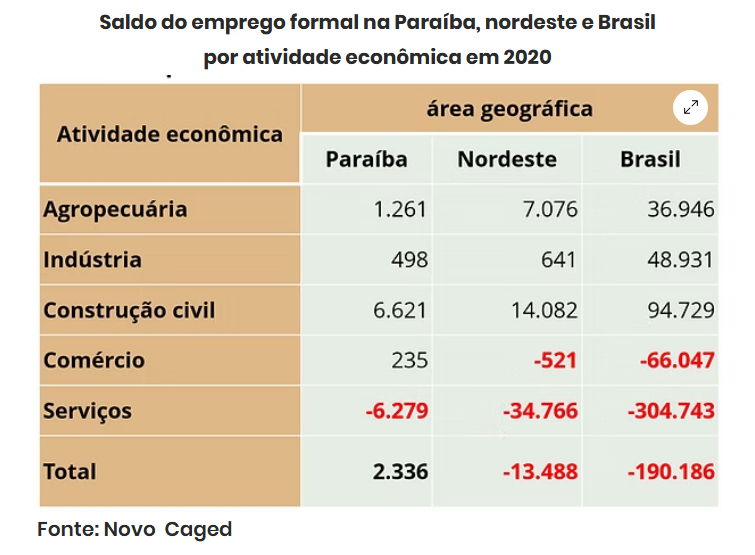
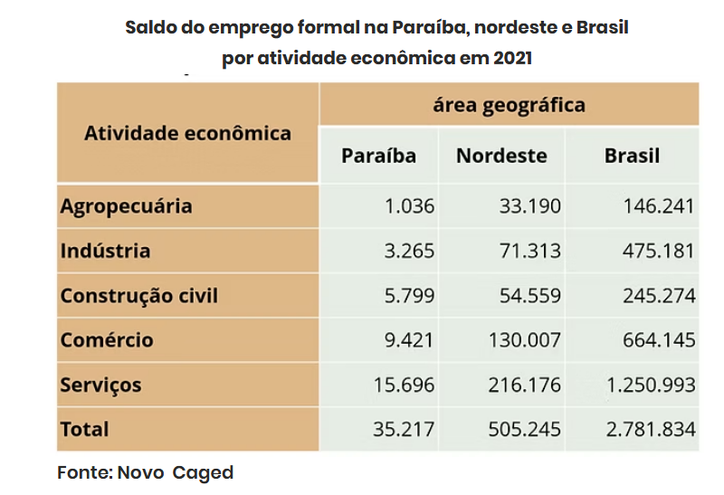
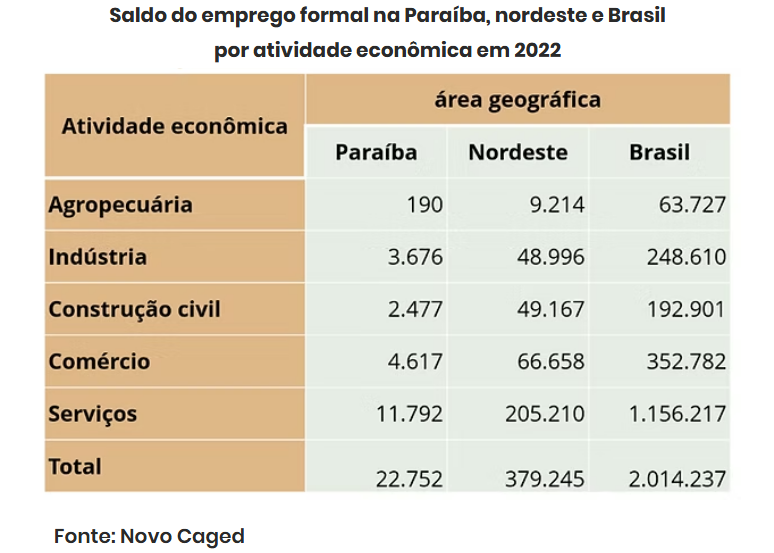
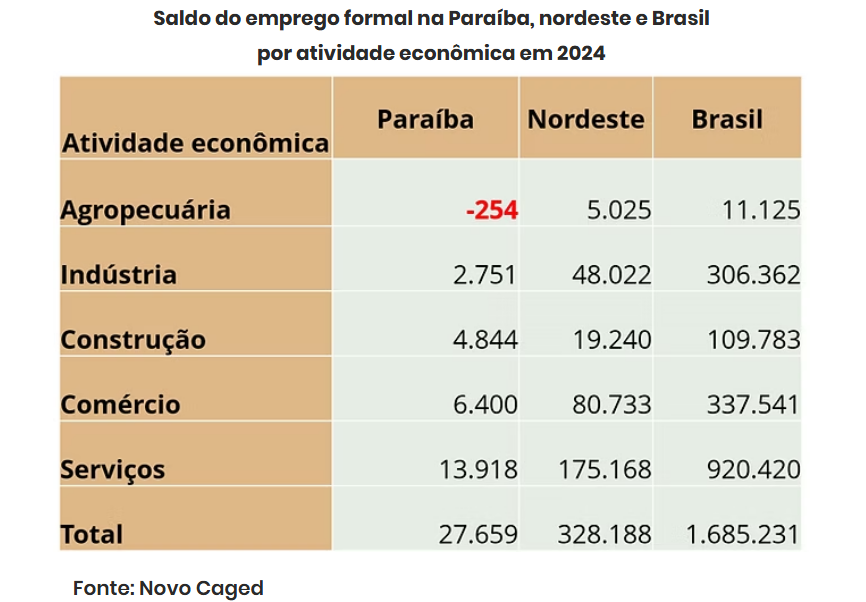

CONECTA - CAECO
CENTRO ACADÊMICO DE ECONOMIA - UFPB
Análises
Trabalhos escritos por projetos de pesquisa/extensão e por alunos do curso de Ciências Econômicas
RESILIÊNCIA E VULNERABILIDADE: O Saldo de Emprego Formal na Paraíba em Perspectiva Comparada com o Nordeste e o Brasil
Autores: Kauã Paiva e Wallace Paulo
Data: 28/02/2026
A pandemia da COVID-19 trouxe um dos maiores choques recentes para o mercado de trabalho formal no Brasil. As medidas de restrição, necessárias para conter a circulação do vírus, atingiram em cheio setores de grande contato humano, como serviços e comércio. Ainda assim, os impactos não foram homogêneos. Enquanto o Brasil e o Nordeste registraram forte destruição de postos formais em 2020, a Paraíba destoou: conseguiu manter saldo positivo de empregos, revelando um padrão de resiliência que chamou atenção.
Essa trajetória, no entanto, não foi linear. Entre 2020 e 2024, o saldo de empregos formais oscilou entre avanços e retrações, refletindo tanto os efeitos imediatos da crise quanto a recuperação possibilitada pela vacinação e pela reabertura gradual da economia. O objetivo deste texto é analisar como a Paraíba se posicionou nesse período, em comparação com o Nordeste e o Brasil, e discutir até que ponto a resiliência conjuntural convive com vulnerabilidades estruturais.
Em 2020, a Paraíba foi o único estado nordestino a apresentar saldo positivo de empregos formais, em um momento em que o país fechava postos de trabalho. Esse desempenho se deveu, sobretudo, à construção civil, autorizada a funcionar mesmo durante as medidas restritivas, que garantiu a continuidade de obras públicas e privadas, incluindo hospitais, escolas técnicas e trechos de rodovias. O setor compensou as perdas em serviços e comércio e foi responsável por sustentar a resiliência do emprego formal no estado.
Com o avanço da vacinação, 2021 marcou uma recuperação expressiva. O saldo de empregos formais cresceu mais de 1.400% em relação ao ano anterior, puxado pelo setor de serviços, que havia sido o mais atingido em 2020, e pelo comércio e a indústria. Essa recuperação vigorosa foi reflexo da reabertura econômica e da demanda reprimida durante a pandemia, que impulsionou contratações em diferentes segmentos.
O ano de 2022, contudo, registrou desaceleração. A normalização do consumo reduziu a intensidade das contratações, especialmente no comércio e na construção civil. Apenas a indústria manteve crescimento, com destaque para alimentos, bebidas e produtos farmacêuticos.
Já em 2023, o saldo voltou a cair, mas a redução foi menos acentuada que no Nordeste e no Brasil, reforçando a ideia de resiliência relativa da Paraíba. Ainda assim, crises em empresas de grande porte, como Coteminas e Alpargatas, expuseram a vulnerabilidade de uma base produtiva concentrada em poucos setores e fortemente dependente de algumas empresas industriais.

Em 2024, a trajetória voltou a ser de expansão, sustentada pelo crescimento dos serviços, do comércio e da construção civil. O setor agrícola, no entanto, sofreu retração em razão da queda na produção de cana-de-açúcar, reflexo tanto das irregularidades climáticas no semiárido e na Zona da Mata quanto da diminuição da área colhida. Esse contraste evidencia que, embora haja capacidade de recuperação, persistem fragilidades ligadas à dependência de determinadas atividades econômicas.
Quando observada em perspectiva comparada, a Paraíba mostra um desempenho destoante. Em 2020, foi o único estado do Nordeste com saldo positivo de empregos, e nos anos seguintes apresentou uma recuperação consistente, embora menos intensa que a da região, que partiu de um ponto inicial mais negativo. Em 2023, no contexto de política monetária restritiva e incertezas fiscais, a queda no saldo de empregos formais foi menos intensa que a média do Nordeste e do Brasil, o que reforça a resiliência do estado. Ainda assim, a remuneração média nominal cresceu apenas 12,2% entre 2020 e 2023 e continuou sendo a mais baixa entre os recortes geográficos, ampliando a distância em relação à média nacional.
A estrutura setorial da economia ajuda a compreender esse quadro. Na Paraíba, os serviços representavam, em 2024, 44,5% do emprego formal, participação inferior à média nordestina e nacional, mas o comércio possuía um peso mais elevado, sinalizando uma economia fortemente orientada ao consumo imediato das famílias. A construção civil se destacava com uma participação bem acima da média regional e nacional, reforçando sua importância na sustentação do emprego formal no estado, especialmente na região metropolitana de João Pessoa, impulsionada por obras públicas e investimentos em energias renováveis, como o parque fotovoltaico de Santa Luzia. A indústria mantinha participação intermediária, maior que a do Nordeste, mas ainda abaixo da média nacional, enquanto a agropecuária seguia com baixa relevância, refletindo o predomínio da informalidade no campo. Além disso, a presença significativa do setor público como empregador formal — responsável por mais de um quinto dos vínculos — revela a importância da administração pública, sobretudo em municípios de pequeno porte, como polo de absorção de mão de obra.
Essa combinação de fatores mostra que a Paraíba conseguiu enfrentar melhor alguns choques conjunturais, mas ainda enfrenta limitações estruturais. Sua resiliência esteve associada a condições momentâneas, como a continuidade das obras durante a pandemia, a menor exposição ao turismo e a relevância do setor público como empregador. Porém, a sustentabilidade de um crescimento mais inclusivo e robusto exige diversificação da base industrial, maior formalização no campo, valorização salarial e menor dependência do setor público.

Copyright © CONECTA-CAECO 2026